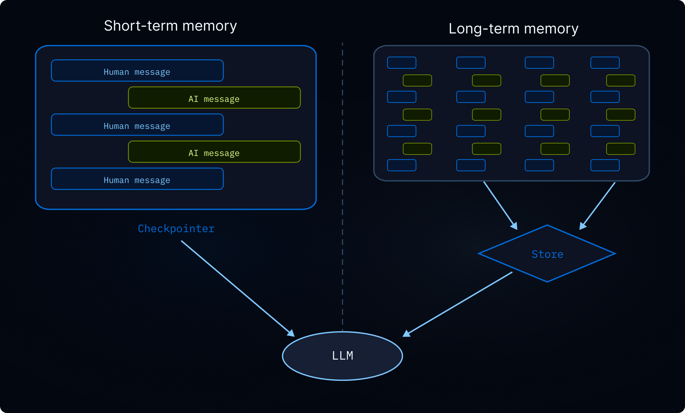

记忆
为使用深度智能体构建的代理添加持久记忆，以便他们在对话中学习和改进
记忆可以让您的代理在对话中学习和改进。 Deep Agents 通过文件系统支持的内存使内存成为一流的：代理将内存作为文件读取和写入，并且您可以使用后端 控制这些文件的存储位置。
要生成编程智能体通过 AGENTS.md 发现的存储库 wiki，请参阅 OpenWiki。
本页涵盖长期记忆：在对话中持续存在的记忆。对于短期记忆（单个会话中的对话历史记录和临时文件），请参阅上下文工程 指南。短期记忆作为代理状态的一部分自动管理。

记忆是如何运作的
- 将代理指向内存文件。 创建代理时将文件路径传递给
memory=。您还可以通过skills=传递 技能 以获取程序内存（告诉代理如何执行任务的可重用指令）。 后端 控制文件的存储位置以及谁可以访问它们。 - 代理读取内存。 代理可以在启动时将内存文件加载到系统提示符中，或者在会话过程中按需读取它们。例如，skills 使用按需加载：代理在启动时仅读取技能描述，然后仅在与任务匹配时读取完整的技能文件。这可以保持上下文精简，直到需要某种功能为止。
- 代理更新内存（可选）。 当代理了解新信息时，它可以使用其内置的
edit_file工具来更新内存文件。更新可以在对话期间（默认）进行，也可以通过后台合并 在对话之间的后台进行。更改将保留并在下一次对话中可用。并非所有内存都是可写的：开发人员定义的技能和组织策略通常是只读的。详细信息请参见只读与可写内存。
两种最常见的模式是代理范围内存（在所有用户之间共享）和用户范围内存（每个用户隔离）。
对于编程智能体通过 AGENTS.md 发现的生成的存储库 wiki，请参阅 OpenWiki。
作用域内存
代理内存可以划分范围，以便使用代理的每个人都可以访问相同的内存文件，或者每个用户都可以单独使用内存文件。
代理范围内存
为代理提供随时间演变的持久身份。代理范围的内存在所有用户之间共享，因此代理可以通过每次对话建立自己的角色、积累知识并学习偏好。当它与用户交互时，它会发展专业知识，完善其方法，并记住什么是有效的。当它具有写访问权限时，它还可以学习和更新技能。
关键是后端命名空间：将其设置为 (assistant_id,) 意味着该代理的每个对话都会读取和写入同一内存文件。
访问rt.server_info需要deepagents>=0.5.0。在旧版本上，请改为从 get_config()["metadata"]["assistant_id"] 读取助手 ID。
from deepagents import create_deep_agent
from deepagents.backends import CompositeBackend, StateBackend, StoreBackend
agent = create_deep_agent(
model="google_genai:gemini-3.6-flash",
memory=["/memories/AGENTS.md"],
skills=["/skills/"],
backend=CompositeBackend(
default=StateBackend(),
routes={
"/memories/": StoreBackend(
namespace=lambda rt: (
rt.server_info.assistant_id, # [!code highlight]
),
),
"/skills/": StoreBackend(
namespace=lambda rt: (
rt.server_info.assistant_id, # [!code highlight]
),
),
},
),
)
完整示例：种子内存和调用
用初始记忆填充存储，然后跨两个线程调用代理以查看它记住并更新它学到的内容。
from langchain_core.utils.uuid import uuid7
from deepagents import create_deep_agent
from deepagents.backends import CompositeBackend, StateBackend, StoreBackend
from deepagents.backends.utils import create_file_data
from langgraph.store.memory import InMemoryStore
store = InMemoryStore() # Use platform store when deploying to LangSmith
# Seed the memory file
store.put(
("my-agent",),
"/memories/AGENTS.md",
create_file_data("""## Response style
- Keep responses concise
- Use code examples where possible
"""),
)
# Seed a skill
store.put(
("my-agent",),
"/skills/langgraph-docs/SKILL.md",
create_file_data("""---
name: langgraph-docs
description: Fetch relevant LangGraph documentation to provide accurate guidance.
---
# langgraph-docs
Use the fetch_url tool to read https://docs.langchain.com/llms.txt, then fetch relevant pages.
"""),
)
agent = create_deep_agent(
model="google_genai:gemini-3.6-flash",
memory=["/memories/AGENTS.md"],
skills=["/skills/"],
backend=lambda rt: CompositeBackend(
default=StateBackend(rt),
routes={
"/memories/": StoreBackend(
rt, namespace=lambda rt: ("my-agent",)
),
"/skills/": StoreBackend(
rt, namespace=lambda rt: ("my-agent",)
),
},
),
store=store,
)
# Thread 1: the agent learns a new preference and saves it to memory
config1 = {"configurable": {"thread_id": str(uuid7())}}
agent.invoke(
{"messages": [{"role": "user", "content": "I prefer detailed explanations. Remember that."}]},
config=config1,
)
# Thread 2: the agent reads memory and applies the preference
config2 = {"configurable": {"thread_id": str(uuid7())}}
agent.invoke(
{"messages": [{"role": "user", "content": "Explain how transformers work."}]},
config=config2,
)
用户范围内存
为每个用户提供自己的内存文件。代理会记住每个用户的偏好、上下文和历史记录，而核心代理指令保持不变。如果存储在用户范围的后端中，用户还可以拥有每个用户的技能。
命名空间使用 (user_id,)，因此每个用户都会获得内存文件的独立副本。用户 A 的偏好永远不会泄漏到用户 B 的对话中。
from deepagents import create_deep_agent
from deepagents.backends import CompositeBackend, StateBackend, StoreBackend
agent = create_deep_agent(
model="google_genai:gemini-3.6-flash",
memory=["/memories/preferences.md"],
skills=["/skills/"],
backend=CompositeBackend(
default=StateBackend(),
routes={
"/memories/": StoreBackend(
namespace=lambda rt: (rt.server_info.user.identity,),
),
"/skills/": StoreBackend(
namespace=lambda rt: (rt.server_info.user.identity,),
),
},
),
)
完整示例：跨用户隔离内存
为每个用户存储种子并以两个不同用户的身份调用代理。每个用户只能看到自己的偏好。
from langchain_core.utils.uuid import uuid7
from deepagents import create_deep_agent
from deepagents.backends import CompositeBackend, StateBackend, StoreBackend
from deepagents.backends.utils import create_file_data
from langgraph.store.memory import InMemoryStore
store = InMemoryStore() # Use platform store when deploying to LangSmith
# Seed preferences for two users
store.put(
("user-alice",),
"/memories/preferences.md",
create_file_data("""## Preferences
- Likes concise bullet points
- Prefers Python examples
"""),
)
store.put(
("user-bob",),
"/memories/preferences.md",
create_file_data("""## Preferences
- Likes detailed explanations
- Prefers TypeScript examples
"""),
)
# Seed a skill for Alice
store.put(
("user-alice",),
"/skills/langgraph-docs/SKILL.md",
create_file_data("""---
name: langgraph-docs
description: Fetch relevant LangGraph documentation to provide accurate guidance.
---
# langgraph-docs
Use the fetch_url tool to read https://docs.langchain.com/llms.txt, then fetch relevant pages.
"""),
)
agent = create_deep_agent(
model="google_genai:gemini-3.6-flash",
memory=["/memories/preferences.md"],
skills=["/skills/"],
backend=lambda rt: CompositeBackend(
default=StateBackend(rt),
routes={
"/memories/": StoreBackend(
rt,
namespace=lambda rt: (rt.server_info.user.identity,),
),
"/skills/": StoreBackend(
rt,
namespace=lambda rt: (rt.server_info.user.identity,),
),
},
),
store=store,
)
# When deployed, each authenticated request resolves
# `rt.server_info.user.identity` to the calling user, so Alice and Bob
# automatically see only their own preferences.
agent.invoke(
{"messages": [{"role": "user", "content": "How do I read a CSV file?"}]},
config={"configurable": {"thread_id": str(uuid7())}},
)
高级用法
除了内存路径和范围的基本配置选项之外，您还可以配置更高级的内存参数：
| 方面 | 提问它回答 | 选项 |
|---|---|---|
| 期间 | 持续多久？ | 短期（单个对话）或长期（跨对话） |
| 信息类型 | 这是什么样的信息？ | 情景（过去的经历）、程序（说明和技能）或语义（事实） |
| 范围 | 谁可以查看和修改它？ | 用户、代理 或 组织 |
| 更新策略 | 记忆是什么时候写的？ | 通话期间（默认）或通话之间 |
| 检索 | 记忆是如何被读取的？ | 加载到提示（默认）或按需（例如，技能） |
| 代理权限 | 代理可以写入内存吗？ | 读写（默认）或只读（对于共享策略） |
情景记忆
情景记忆存储过去经历的记录：发生了什么、发生的顺序以及结果是什么。与语义记忆（存储在 AGENTS.md 等文件中的事实和偏好）不同，情景记忆保留了完整的对话上下文，因此代理可以回忆“如何”解决问题，而不仅仅是从中“学到什么”。要生成和维护编程智能体的存储库级 wiki，请参阅 OpenWiki。
深度智能体已经使用检查点，这是支持情景记忆的机制：每个对话都作为检查点线程保存。
要使过去的对话可搜索，请将线程搜索包装在工具中。 user_id 是从运行时上下文中提取的，而不是作为参数传递：
from langgraph_sdk import get_client
from langchain.tools import tool, ToolRuntime
client = get_client(url="<DEPLOYMENT_URL>")
@tool
async def search_past_conversations(query: str, runtime: ToolRuntime) -> str:
"""Search past conversations for relevant context."""
user_id = runtime.server_info.user.identity # [!code highlight]
threads = await client.threads.search(
metadata={"user_id": user_id},
limit=5,
)
results = []
for thread in threads:
history = await client.threads.get_history(thread_id=thread["thread_id"])
results.append(history)
return str(results)
您可以通过调整元数据过滤器按用户或组织确定主题搜索范围：
# Search conversations for a specific user
threads = await client.threads.search(
metadata={"user_id": user_id},
limit=5,
)
# Search conversations across an organization
threads = await client.threads.search(
metadata={"org_id": org_id},
limit=5,
)
这对于执行复杂的多步骤任务的代理非常有用。例如，编程智能体可以回顾过去的调试会话并直接跳到可能的根本原因。
组织级内存
组织级内存遵循与用户范围内存相同的模式，但具有组织范围的命名空间，而不是每个用户的命名空间。将其用于应适用于组织中所有用户和代理的策略或知识。
组织内存通常是只读，以防止通过共享状态进行提示注入。有关详细信息，请参阅只读与可写内存。
from deepagents import create_deep_agent
from deepagents.backends import CompositeBackend, StateBackend, StoreBackend
agent = create_deep_agent(
model="google_genai:gemini-3.6-flash",
memory=[
"/memories/preferences.md",
"/policies/compliance.md",
],
backend=CompositeBackend(
default=StateBackend(),
routes={
"/memories/": StoreBackend(
namespace=lambda rt: (rt.server_info.user.identity,),
),
"/policies/": StoreBackend(
namespace=lambda rt: (rt.context.org_id,),
),
},
),
)
从应用程序代码填充组织内存：
from langgraph_sdk import get_client
from deepagents.backends.utils import create_file_data
client = get_client(url="<DEPLOYMENT_URL>")
await client.store.put_item(
(org_id,),
"/compliance.md",
create_file_data("""## Compliance policies
- Never disclose internal pricing
- Always include disclaimers on financial advice
"""),
)
使用 权限 强制组织级内存为只读，或使用 策略挂钩 自定义验证逻辑。
后台整合
默认情况下，代理在对话期间写入内存（热路径）。另一种方法是将对话之间的记忆处理作为后台任务，有时称为“睡眠时间计算”。一个单独的深度智能体会审查最近的对话，提取关键事实，并将其与现有记忆合并。
| 方法 | 优点 | 缺点 |
|---|---|---|
| 热路径（对话期间） | 内存立即可用，对用户透明 | 增加延迟，代理必须执行多项任务 |
| 背景（对话之间） | 无面向用户的延迟，可以跨多个对话进行合成 | 记忆在下次对话之前不可用，需要第二个特工 |
对于大多数应用程序，热路径就足够了。当您需要减少多个对话的延迟或提高内存质量时，请添加后台整合。
推荐的模式是在主代理旁边部署一个整合代理 - 一个深度智能体，读取最近的对话历史记录，提取关键事实，并将它们合并到内存存储中 - 并按 cron 计划 触发它。选择反映用户实际与代理交互频率的节奏：每日流量稳定的聊天产品可能每隔几个小时就会整合一次，而每周使用几次的工具只需要每晚或每周运行一次。比用户交谈更频繁的整合只会在无操作运行时烧毁代币。
集运代理
整合代理读取最近的对话历史并将关键事实合并到内存存储中。将其与您的主要代理一起注册在 langgraph.json 中：
from datetime import datetime, timedelta, timezone
from deepagents import create_deep_agent
from langchain.tools import tool, ToolRuntime
from langgraph_sdk import get_client
sdk_client = get_client(url="<DEPLOYMENT_URL>")
@tool
async def search_recent_conversations(query: str, runtime: ToolRuntime) -> str:
"""Search this user's conversations updated in the last 6 hours."""
user_id = runtime.server_info.user.identity # [!code highlight]
since = datetime.now(timezone.utc) - timedelta(hours=6)
threads = await sdk_client.threads.search(
metadata={"user_id": user_id},
updated_after=since.isoformat(),
limit=20,
)
conversations = []
for thread in threads:
history = await sdk_client.threads.get_history(
thread_id=thread["thread_id"]
)
conversations.append(history["values"]["messages"])
return str(conversations)
agent = create_deep_agent(
model="google_genai:gemini-3.6-flash",
system_prompt="""Review recent conversations and update the user's memory file.
Merge new facts, remove outdated information, and keep it concise.""",
tools=[search_recent_conversations],
)
{
"dependencies": ["."],
"graphs": {
"agent": "./agent.py:agent",
"consolidation_agent": "./consolidation_agent.py:agent"
},
"env": ".env"
}
克朗
cron 作业 按固定计划运行整合代理。代理搜索最近的对话并将其合成到内存中。将计划与您的使用模式相匹配，以便整合运行大致跟踪实际活动。
graph LR
Store[(Memory store)] -.->|reads| Conv1[Conversation 1]
Store -.->|reads| Conv2[Conversation 2]
Cron[Cron schedule] -->|periodic| Agent[Consolidation agent]
Agent -->|writes| Store
classDef trigger fill:#F6FFDB,stroke:#6E8900,stroke-width:2px,color:#2E3900
classDef process fill:#E5F4FF,stroke:#006DDD,stroke-width:2px,color:#030710
classDef output fill:#EBD0F0,stroke:#885270,stroke-width:2px,color:#441E33
classDef schedule fill:#FDF3FF,stroke:#7E65AE,stroke-width:2px,color:#504B5F
class Conv1,Conv2 trigger
class Agent process
class Store output
class Cron schedule
使用 cron 作业安排整合代理：
from langgraph_sdk import get_client
client = get_client(url="<DEPLOYMENT_URL>")
cron_job = await client.crons.create(
assistant_id="consolidation_agent",
schedule="0 */6 * * *",
input={"messages": [{"role": "user", "content": "Consolidate recent memories."}]},
)
所有 cron 计划均以 UTC 解释。有关管理和删除 cron 作业的详细信息，请参阅 cron 作业。
cron 间隔必须与整合代理内的回顾窗口相匹配。上面的示例每 6 小时运行一次 (0 */6 * * *)，代理的 search_recent_conversations 工具会回溯 timedelta(hours=6) — 保持这些同步。如果 cron 运行的次数比回溯的次数多，您将重新处理相同的对话；如果它运行得较少，你就会丢弃那些落在窗外的记忆。
有关使用后台进程部署代理的更多信息，请参阅即将投入生产。
只读与可写内存
默认情况下，代理可以读取和写入内存文件。对于组织策略或合规性规则等共享状态，您可能希望将内存设为只读，以便代理可以引用它但不能修改它。这可以防止通过共享内存进行提示注入，并确保只有您的应用程序代码控制文件中的内容。
| 允许 | 使用案例 | 它是如何运作的 |
|---|---|---|
| 读写（默认） | 用户喜好，座席自我提升，学到的【技能】(/oss/python/deepagents/skills) | 代理通过 edit_file 工具更新文件 |
| 只读 | 组织政策、合规规则、共享知识库、开发人员定义的技能 | 通过应用程序代码或Store API 进行填充。使用 权限 拒绝写入特定路径，或使用 策略挂钩 自定义验证逻辑。 |
安全注意事项： 如果一个用户可以写入另一用户读取的内存，则恶意用户可以将指令注入共享状态。为了缓解这种情况：
- 默认为用户范围
(user_id)除非您有特定的共享原因 - 将只读内存用于共享策略（通过应用程序代码填充，而不是代理）
- 在代理写入共享内存之前添加人机交互验证。使用中断 要求人工批准才能写入敏感路径。
要强制执行只读内存，请使用 permissions 以声明方式拒绝对特定路径的写入。对于自定义验证逻辑（速率限制、审核日志记录、内容检查），请使用后端策略挂钩。
并发写入
多个线程可以并行写入内存，但并发写入同一文件可能会导致最后写入获胜冲突。对于用户范围的内存来说，这种情况很少见，因为用户通常一次只有一个活动对话。对于代理范围或组织范围的内存，请考虑使用后台整合 来序列化写入，或将内存构造为每个主题的单独文件以减少争用。
在实践中，如果写入由于冲突而失败，LLM 通常足够聪明，可以重试或正常恢复，因此单个丢失的写入并不是灾难性的。
同一部署中的多个代理
要在共享部署中为每个代理提供自己的内存，请将 assistant_id 添加到命名空间：
StoreBackend(
namespace=lambda rt: (
rt.server_info.assistant_id, # [!code highlight]
rt.server_info.user.identity,
),
)
如果您只需要每个代理隔离而不需要每个用户范围，请单独使用 assistant_id。
使用 LangSmith 跟踪 审核代理写入内存的内容。每个文件写入在跟踪中都显示为工具调用。
参见
- OpenWiki：生成和维护编程智能体通过
AGENTS.md找到的存储库 wiki - Backends: 选择内存文件的存储位置
- 上下文工程：短期记忆、卸载和总结
- 【技能】(/oss/python/deepagents/skills)：按需程序记忆